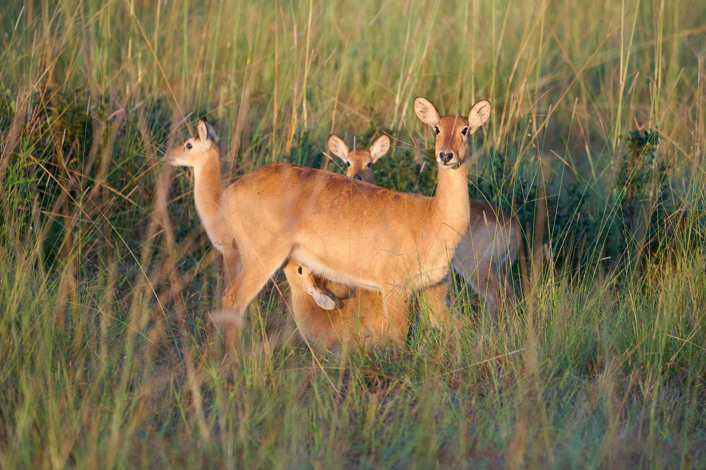

About
History
In Order

- 1872 Yellowstone National Park
- 1890 Sequoia National Park
- 1890 Yosemite National Park
- 1899 Mount Rainier National Park
- 1902 Crater Lake National Park
- 1910 Glacier National Park
- 1916 National Park Service Created
- 1919 Grand Canyon National Park
- 1919 Zion National Park
- 1921 Hot Springs National Park
- 1944 Big Bend National Park
- 1947 Everglades National Park
- 1968 North Cascades National Park
- 1980 Kenai Fjords & Wrangell / St. Elias National Parks
- 2004 Great Sand Dunes National Park
- 2013 Pinnacles National Park
Yellowstone National Park was established by Congress on March 1, 1872, as the first national park, marking the start of the global national park movement. Initially, various federal agencies managed different parklands, leading to fragmented oversight. To address this, the National Park Service (NPS) was created on August 25, 1916, to unify the management of U.S. national parks and monuments. A significant expansion occurred in 1933, when an Executive Order transferred additional sites to the NPS, moving toward a unified system. The General Authorities Act of 1970 further affirmed the goal of managing all national parklands under a single framework. Today, the National Park System includes over 400 sites across all U.S. states and territories, covering more than 84 million acres. New parks are usually created by Congress, with the President able to designate national monuments via the Antiquities Act of 1906. The NPS's mission has expanded beyond conservation to include cultural preservation, community engagement, and global conservation efforts. Over 20,000 NPS employees now help protect these resources and improve public access to nature and history.
Wildlife
- Devils Hole Pupfish
- Where: Death Valley National Park (Devils Hole, a water-filled cave)
- Size: Less than 1 inch
- Special: Lives in one single pool of water—literally nowhere else
- Why Special: It might be the rarest fish on Earth
- Red Wolf (very rare)
- Where: Previously in Great Smoky Mountains (reintroduction efforts), now mostly in wildlife refuges
- Status: Critically endangered
- Why Special: Native to the Southeast; fewer than 20 in the wild
- Kaibab Squirrel
- Where: Grand Canyon National Park (North Rim only)
- Unique Trait: White fluffy tail and ear tufts
- Fun Fact: Only lives in the ponderosa pine forests on the Kaibab Plateau
Biodiversity
Saguaro cactus
Rising proudly from the desert floor, the saguaro cactus is an iconic emblem of the American Southwest. Native to the Sonoran Desert, these towering giants can reach heights of over 40 feet and live well beyond 150 years. Saguaro National Park is renowned for showcasing their striking presence. Each arm of the cactus reflects a long journey of resilience and adaptation, offering shelter and sustenance to a variety of wildlife—from birds that nest in their trunks to insects that thrive nearby. As vibrant blooms appear across the desert, the saguaro stands tall—a lasting symbol of the desert's strength and endurance.
Bristlecone pine
Nestled in California’s White Mountains, the Bristlecone Pine ranks among the oldest living beings on the planet. Some of these remarkable trees have endured for more than 5,000 years, their weathered forms shaped by centuries of extreme conditions. With twisted trunks and rugged branches, they embody resilience in an unforgiving environment. Their dense, decay-resistant wood helps them thrive where most plants cannot. Each growth ring holds a record of survival, offering a glimpse into ancient natural history. To stand among them is to journey into the deep past—an encounter with the living echoes of time.
Redwood
In the misty, ancient forests of California, redwoods soar toward the sky, shrouded in quiet wonder. As some of the tallest trees on Earth—towering over 350 feet—they inspire awe in anyone who walks beneath their canopy in Redwood National Park. Their rugged, fire-resistant bark defends them against threats like flames, pests, and rot, showcasing their remarkable resilience. These towering giants form a thriving habitat, sheltering a rich diversity of life within their shadow. They stand as living monuments to nature’s grandeur, a powerful example of what the natural world can become when allowed to flourish.